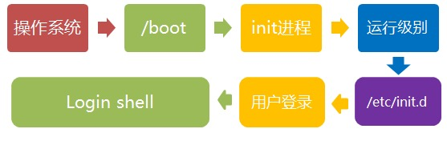
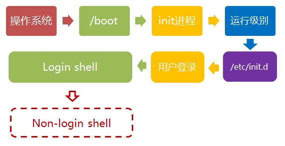
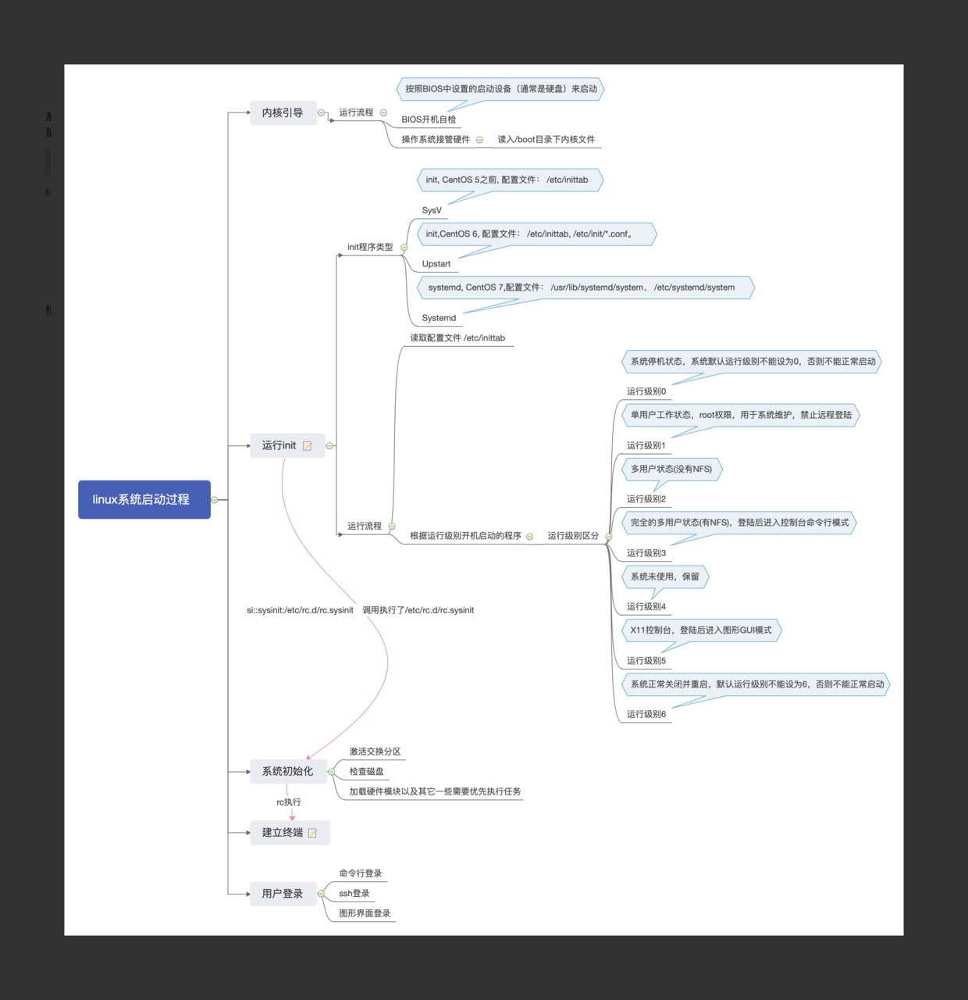

总启动流程
一般来说，所有的操作系统的启动流程基本就是：
总的来说，linux系统启动流程可以简单总结为以下几步：
- 开机BIOS自检，加载硬盘。
- 读取MBR,进行MBR引导。
- grub引导菜单(Boot Loader)。
- 加载内核kernel。
- 启动init进程，依据inittab文件设定运行级别
- init进程，执行rc.sysinit文件。
- 启动内核模块，执行不同级别的脚本程序。
- 执行/etc/rc.d/rc.local
- 启动mingetty，进入系统登陆界面。
linux系统安装时，如果要想设置开启启动项，可以：
开机到BIOS提醒界面，按键F11（Dell服务器的做法）进入BIOS设置BOOT MENU，继而设置启动项：硬盘HD启动，光盘CD/DVD启动，还是U盘USB启动。
详细流程
下面就linux操作系统的启动过程做一详细解析记录。
1. 加载内核
操作系统接管硬件以后，首先读入 /boot 目录下的内核文件。
1 | [root@bastion-IDC ~]# ll /boot/ |
2. 启动初始化进程
内核文件加载以后，就开始运行第一个程序 /sbin/init，它的作用是初始化系统环境。

由于init是第一个运行的程序，它的进程编号（pid）就是1。其他所有进程都从它衍生，都是它的子进程。
3. 确定运行级别
许多程序需要开机启动。它们在Windows叫做”服务”（service），在Linux就叫做”守护进程”（daemon）。
init进程的一大任务，就是去运行这些开机启动的程序。但是，不同的场合需要启动不同的程序，比如用作服务器时，需要启动Apache，用作桌面就不需要。Linux允许为不同的场合，分配不同的开机启动程序，这就叫做”运行级别”（runlevel）。也就是说，启动时根据”运行级别”，确定要运行哪些程序。
Linux预置七种init运行级别（0-6）：
0：关机模式 （相当于poweroff）
1：单用户模式
2：无网络支持的多用户模式
3：有网络支持的多用户模式（也就是文本模式，工作中最常用的模式）
4：保留，未使用
5：有网络支持的X-windows支持多用户模式（也就是桌面图形模式）
6: 重新引导系统，即重启（相当于reboot）
init进程首先读取文件 /etc/inittab，它是运行级别的设置文件。
如果打开它，可以看到第一行是这样的：
1 | [root@bastion-IDC ~]# cat /etc/inittab |
initdefault的值是3，表明系统启动时的运行级别为3。如果需要指定其他级别，可以手动修改这个值。
那么，运行级别3有哪些程序呢，系统怎么知道每个级别应该加载哪些程序呢？
答案是每个运行级别在/etc目录下面，都有一个对应的子目录，指定要加载的程序。
1 | /etc/rc0.d |
上面目录名中的”rc”，表示run command（运行程序），最后的d表示directory（目录）。下面让我们看看 /etc/rc3.d 目录中到底指定了哪些程序。
1 | [root@bastion-IDC ~]# ll /etc/rc3.d/ |
可以看到：
字母S表示Start，也就是启动的意思（启动脚本的运行参数为start）。如果这个位置是
字母K，就代表Kill（关闭），即如果从其他运行级别切换过来，需要关闭的程序（启动脚本的运行参数为stop）。后面的两位数字表示
处理顺序，数字越小越早处理，所以第一个启动的程序是motd，然后是rpcbing、nfs……数字相同时，则按照程序名的字母顺序启动，所以rsyslog会先于sudo启动。这个目录里的所有文件（除了README），就是启动时要加载的程序。如果想增加或删除某些程序，不建议手动修改 /etc/rcN.d 目录，最好是用一些专门命令进行管理（参考这里和这里）。
4. 加载开机启动程序
前面提到，七种预设的”运行级别”各自有一个目录，存放需要开机启动的程序。不难想到，如果多个”运行级别”需要启动同一个程序，那么这个程序的启动脚本，就会在每一个目录里都有一个拷贝。这样会造成管理上的困扰：如果要修改启动脚本，岂不是每个目录都要改一遍？
Linux的解决办法，就是七个 /etc/rcN.d 目录里列出的程序，都设为链接文件，指向另外一个目录 /etc/init.d，真正的启动脚本都统一放在这个目录中。init进程逐一加载开机启动程序，其实就是运行这个目录里的启动脚本。

下面就是链接文件真正的指向：
1 | [root@bastion-IDC ~]# ls -l /etc/rc3.d |
这样做的另一个好处，就是如果你要手动关闭或重启某个进程，直接到目录 /etc/init.d 中寻找启动脚本即可。
比如，我要重启iptables服务器，就运行下面的命令：
1 | [root@bastion-IDC ~]# /etc/init.d/iptables restart |
/etc/init.d 这个目录名最后一个字母d，是directory的意思，表示这是一个目录，用来与程序 /etc/init 区分。
5. 用户登录
开机启动程序加载完毕以后，就要让用户登录了。

一般来说，用户的登录方式有三种：命令行登录、ssh登录、图形界面登录。这三种情况，都有自己的方式对用户进行认证。
1）命令行登录：init进程调用getty程序（意为get teletype），让用户输入用户名和密码。输入完成后，再调用login程序，核对密码（Debian还会再多运行一个身份核对程序/etc/pam.d/login）。如果密码正确，就从文件 /etc/passwd 读取该用户指定的shell，然后启动这个shell。
2）ssh登录：这时系统调用sshd程序（Debian还会再运行/etc/pam.d/ssh ），取代getty和login，然后启动shell。
3）图形界面登录：init进程调用显示管理器，Gnome图形界面对应的显示管理器为gdm（GNOME Display Manager），然后用户输入用户名和密码。如果密码正确，就读取/etc/gdm3/Xsession，启动用户的会话。
6. 进入 login shell
所谓shell，简单说就是命令行界面，让用户可以直接与操作系统对话。用户登录时打开的shell，就叫做login shell。

Linux默认的shell是Bash，它会读入一系列的配置文件。上一步的三种情况，在这一步的处理，也存在差异。
命令行登录：首先读入
/etc/profile，这是对所有用户都有效的配置；然后依次寻找下面三个文件，这是针对当前用户的配置。1
2
3~/.bash_profile
~/.bash_login
~/.profile需要注意的是，这三个文件只要有一个存在，就不再读入后面的文件了。比如，要是
~/.bash_profile存在，就不会再读入后面两个文件了。ssh登录：与第一种情况完全相同。
图形界面登录：只加载
/etc/profile和~/.profile。也就是说，~/.bash_profile不管有没有，都不会运行。
7. 打开 non-login shell
老实说，上一步完成以后，Linux的启动过程就算结束了，用户已经可以看到命令行提示符或者图形界面了。但是，为了内容的完整，必须再介绍一下这一步。
用户进入操作系统以后，常常会再手动开启一个shell。这个shell就叫做 non-login shell，意思是它不同于登录时出现的那个shell，不读取/etc/profile和.profile等配置文件。

non-login shell的重要性，不仅在于它是用户最常接触的那个shell，还在于它会读入用户自己的bash配置文件 ~/.bashrc。大多数时候，我们对于bash的定制，都是写在这个文件里面的。
你也许会问，要是不进入 non-login shell，岂不是.bashrc就不会运行了，因此bash 也就不能完成定制了？
事实上，Debian已经考虑到这个问题了，请打开文件 ~/.profile，可以看到下面的代码：
1 | if [ -n "$BASH_VERSION" ]; then |
上面代码先判断变量 $BASH_VERSION 是否有值，然后判断主目录下是否存在 .bashrc 文件，如果存在就运行该文件。
第三行开头的那个点，是source命令的简写形式，表示运行某个文件，写成”source ~/.bashrc”也是可以的。
因此，只要运行～/.profile文件，～/.bashrc文件就会连带运行。但是上一节的第一种情况提到过，如果存在～/.bash_profile文件，那么有可能不会运行～/.profile文件。解决这个问题很简单，把下面代码写入.bash_profile就行了。
1 | if [ -f ~/.profile ]; then |
这样一来，不管是哪种情况，.bashrc都会执行，用户的设置可以放心地都写入这个文件了。
Bash的设置之所以如此繁琐，是由于历史原因造成的。早期的时候，计算机运行速度很慢，载入配置文件需要很长时间，Bash的作者只好把配置文件分成了几个部分，阶段性载入。系统的通用设置放在 /etc/profile，用户个人的、需要被所有子进程继承的设置放在.profile，不需要被继承的设置放在.bashrc。
顺便提一下，除了Linux以外， Mac OS X 使用的shell也是Bash。但是，它只加载.bash_profile，然后在.bash_profile里面调用.bashrc。而且，不管是ssh登录，还是在图形界面里启动shell窗口，都是如此。
附：启动流程的思维导图

欢迎关注我的微信公众号【MySQL数据库技术】。

| 标题 | 网址 |
|---|---|
| GitHub | https://dbkernel.github.io |
| 知乎 | https://www.zhihu.com/people/dbkernel/posts |
| 思否（SegmentFault） | https://segmentfault.com/u/dbkernel |
| 掘金 | https://juejin.im/user/5e9d3ed251882538083fed1f/posts |
| 开源中国（oschina） | https://my.oschina.net/dbkernel |
| 博客园（cnblogs） | https://www.cnblogs.com/dbkernel |